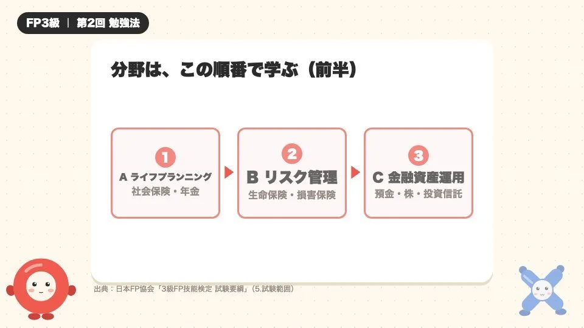
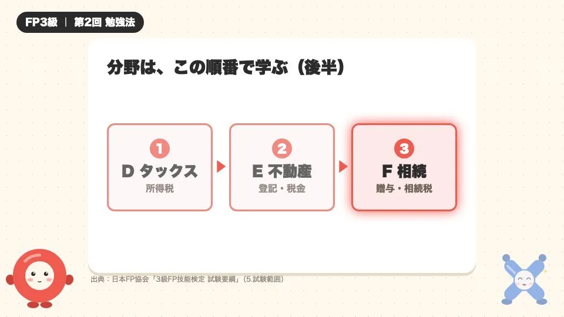
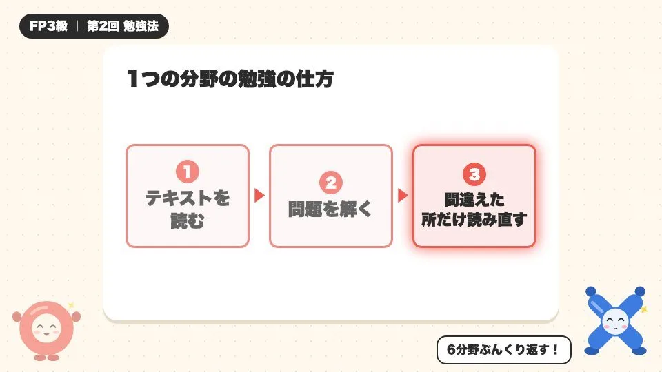
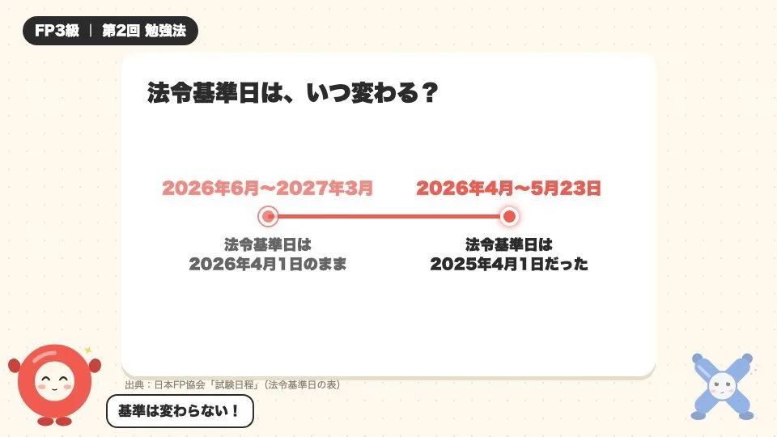
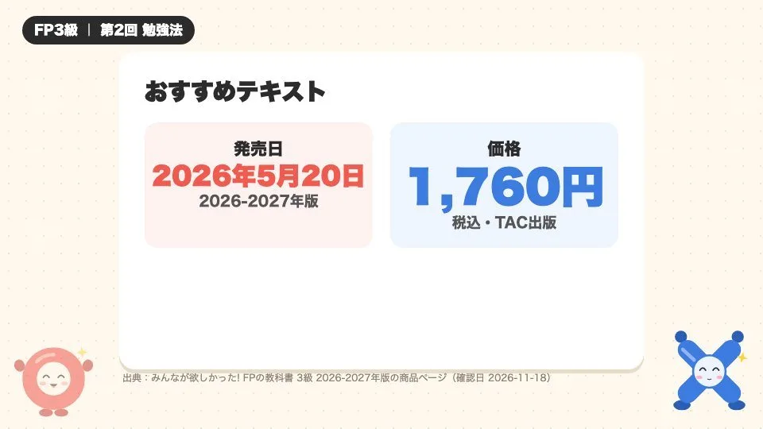
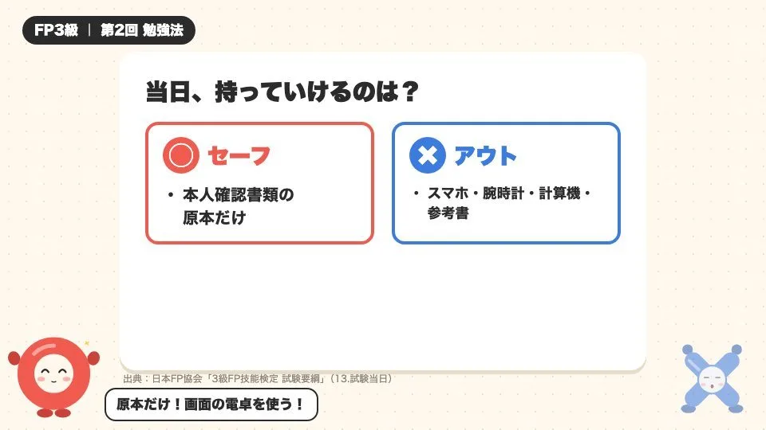
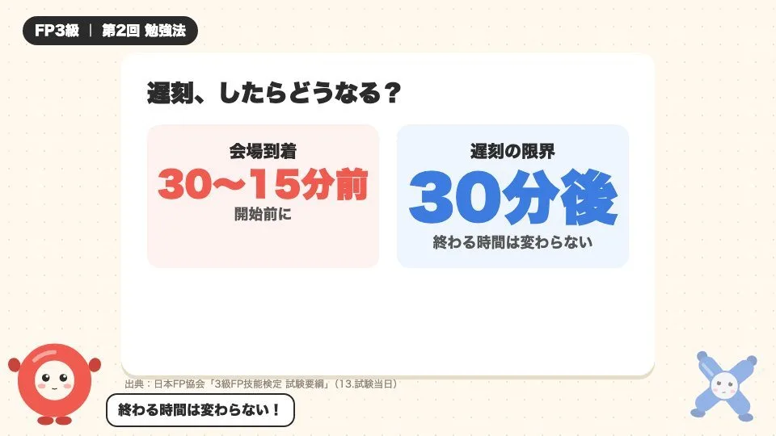
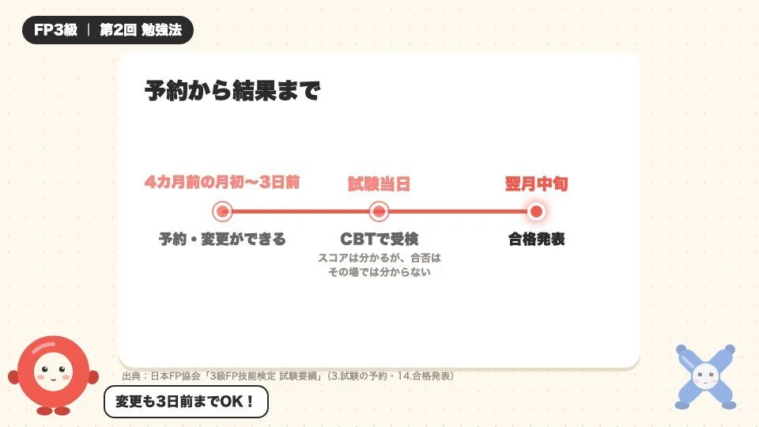
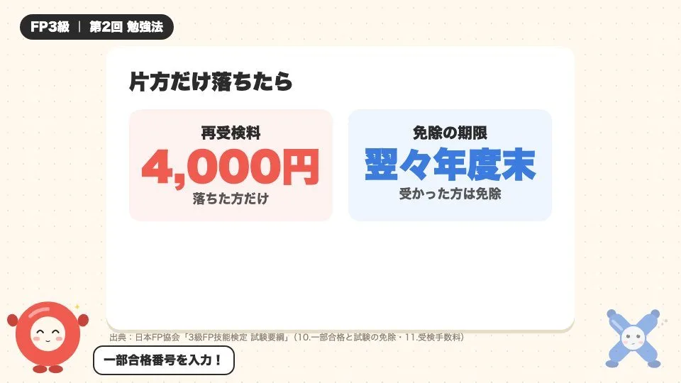

FP3級の勉強は、日本FP協会の公式の試験範囲と同じ順番で、A ライフプランニングからF 相続まで6分野を進めるのが基本です。1つの分野は、テキストを1回読んでから問題を解き、間違えた所だけ読み直すという3ステップを繰り返します。教材は、出題の基準になる「法令基準日」に合った年度版を使う必要があります。CBT方式の試験当日に持ち込めるのは本人確認書類の原本だけで、電卓やスマートフォンは使えません。この記事の数字は2026年11月21日時点で確認したものです。
 ▶ この記事の内容を動画で見る（マルバツ資格塾）
▶ この記事の内容を動画で見る（マルバツ資格塾）
01分野は公式の試験範囲の順番で学ぶ（A→Fの6分野）

FP3級の学科試験の出題範囲は、日本FP協会の試験要綱でA〜Fの6分野に分かれています。このシリーズも、公式の試験範囲と同じ順番で進めます。

6分野の順番と内容は次のとおりです。
| 順番 | 分野 | 内容 |
|---|---|---|
| 1 | A ライフプランニング | 社会保険・年金 |
| 2 | B リスク管理 | 生命保険・損害保険 |
| 3 | C 金融資産運用 | 預金・株・投資信託 |
| 4 | D タックスプランニング | 所得税 |
| 5 | E 不動産 | 登記・税金 |
| 6 | F 相続 | 贈与・相続税 |
ライフプランニングと社会保険・年金の土台を先に固め、保険、金融資産運用と積み上げたあと、後半でタックスプランニング、不動産、相続と進む流れです。前の分野の知識が、次の分野の理解につながります。試験の仕組みや受検料の全体像は、FP3級の試験のしくみ・費用・日程まとめで確認できます。
021つの分野は「読む→解く→間違えた所だけ読み直す」で進める

1つの分野の勉強は、次の3ステップです。
- テキストを1回読む。細かい所で止まらず、ざっと読み通す
- 問題を解く
- 間違えた所だけ、テキストに戻って読み直す
この3ステップを6分野ぶん繰り返します。1回目から完璧に覚えようとしないことが、6分野を一巡させるコツです。問題を解いてから弱い所だけ復習すると、同じ分野を何度も最初から読み直さずに済みます。
03教材は法令基準日に合う年度版を使う

FP3級の試験問題は、「法令基準日」という基準日の時点で施行されている法令をもとに作られます。2026年6月から2027年3月までの試験は、法令基準日がすべて2026年4月1日のまま変わりません。今から勉強を始めても、試験の直前でも、基準が変わらない期間です。
注意古い年度のテキストは、法令基準日がずれています。税金や年金の数字は毎年変わるため、今年度版の教材を使ってください。

おすすめの教材は、TAC出版の「みんなが欲しかった! FPの教科書 3級 2026-2027年版」です。発売日は2026年5月20日、価格は税込1,760円で、問題集もセットで出ています。
04CBT当日の持ち物と遅刻のルール

試験はテストセンターのパソコンで受けるCBT方式です。自席（パソコンブース）に持ち込めるのは、本人確認書類の原本だけです。
| 持ち込めるもの | 持ち込めないもの |
|---|---|
| 本人確認書類の原本 | スマートフォン・腕時計・計算機（電卓）・参考書 |
私物の電卓やスマートフォンは使えません。計算は、試験画面上に表示される電卓機能を使います。本人確認書類は、顔写真つきで氏名と生年月日が分かる、期限内のものが必要です。忘れると受検できないうえ、受検料も返金されないため、前日までに確認しておきましょう。

会場には、試験開始の30分から15分前には到着してください。遅刻しても、開始から30分後までは入室できますが、終わる時間は当初の予約どおりで延長されません。
05予約から合格発表、片方だけ落ちたときの再受検

予約は、受検日を含む4カ月前の月の初めから、受検日の3日前までできます。日時や会場の変更も、受検日の3日前まで可能です。ただし、変更後の新しい受検日は、最初に予約した受検日から4カ月以内にする必要があります。受検した日に分かるのはスコアだけで、合格基準を超えたかどうかはその場では分かりません。合格発表は、受検日の翌月中旬です。

学科試験と実技試験のどちらか一方だけ不合格だった場合は、落ちた方だけ受け直せます。学科のみ・実技のみの受検料は4,000円です。合格した方の試験は、合格した試験実施日の翌々年度の終わりまで免除されます。
ポイント免除は自動ではつきません。次の予約のときに、合格した試験の結果に書かれている一部合格番号を自分で入力する必要があります。
06よくある質問
FP3級の勉強は何から始めればいい？
日本FP協会の公式の試験範囲と同じ順番で、A ライフプランニングからF 相続まで6分野を進めます。1つの分野ごとに、テキストを読む→問題を解く→間違えた所だけ読み直す、を繰り返します。
CBT当日、電卓やスマートフォンは持ち込める？
持ち込めません。自席に持ち込めるのは本人確認書類の原本だけで、計算は試験画面上の電卓機能を使います。
使う教材はいつの年度の版がいい？
法令基準日に合う今年度版を使います。2026年6月〜2027年3月の試験は法令基準日が2026年4月1日のままなので、この期間に合わせた教材を選んでください。
片方の試験だけ落ちたらどうなる？
落ちた方だけ受け直せます。学科のみ・実技のみの受検料は4,000円で、合格した方は翌々年度の終わりまで免除されます。
07まとめ
結論FP3級は、公式の試験範囲と同じ順番で6分野を学び、CBT当日は本人確認書類の原本だけを持っていけば受けられます。
- 学習順はA ライフプランニング→B リスク管理→C 金融資産運用→D タックス→E 不動産→F 相続
- 1分野は「読む→解く→間違えた所だけ読み直す」を繰り返す
- 教材は法令基準日（2026年6月〜2027年3月は2026年4月1日のまま）に合う今年度版を使う
- CBT当日に持ち込めるのは本人確認書類の原本だけ。電卓・スマホ・参考書は不可
- 会場到着は開始30〜15分前、遅刻は30分後まで入室可、終了時間は変わらない
- 合格発表は受検日の翌月中旬。片方だけ落ちたら再受検料4,000円、免除は翌々年度末まで